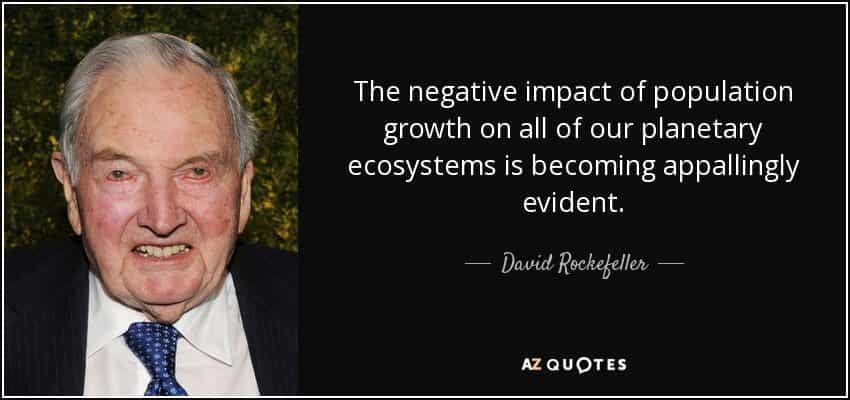

Daryush "Roosh" Valizadeh created ROK in October 2012. You can visit his blog at RooshV.com or follow him on Twitter and Facebook.


Most of the problems that we have in modern society stem from the side effects of the industrial revolution. In exchange for conveniences, order, safety, and technological advances, we suffer from existential malaise, lack of genuine pair bonding, broken familial and tribal units, chronic disease, and having to be ruled by a small group of people who possess immense centralized power. While most of you would continue to live in a post-industrial age in spite of the downsides, it is arguable to say that we certainly live in a “better” time.
The industrial revolution has allowed for two key events:
1. The control of most economic and human output of the Earth by a relatively tiny group who control the minds and behavior of billions of people.
2. Explosion in population thanks to advances in agriculture, hygiene, and medicine.
The result is we have more people controlled by less people. The controllers have the power to essentially drive the face of humanity in a way that could not have been done before the industrial revolution. Globalization, multiculturalism, and socialism are the most efficient and logical ways for the elite to assert control over the planet, and since the dawn of modern banking, they have pushed exactly those ideologies throughout the world.
The elite have convinced us that we are living in a glorious progressive age, but it’s more glorious for them than it is for us. They give us handouts through their welfare state, cheap electronics, and lax sexual morals while they gain immeasurable power and wealth, in what could be considered the most unfair trade that the common man has ever made. They put five dollars in your pocket while you relinquish your own agency and fabric of your society.
Here are nine conclusions we can make from observing how the current system works:
1. Life in a post-industrial revolution age is full of social ills and psychological suffering as humans live in sterile and unfulfilling lives, far away from what nature intended.
2. The elites have engaged in a depopulation agenda that first targets the strongest groups most capable of armed resistance against them. A superfluous population hinders their power and control objectives.
3. The demolition of our industrial system and a return to pre-industry and traditional life would increase the well-being and fulfillment of humanity, but result in the death of perhaps half the world’s population from the lack of agricorp food, especially for those who live in cities.
4. The elites want to maintain the industrial system solely for their own ends. Some depopulation, or “population control” as they call it, helps them maintain their control as technology improves and much of the masses are no longer needed to work. Their end goal is to be the primary owners of mineral, economic, and human resources on Earth, with a decreasing need on humans.

5. The control of the elites can only be eliminated by destroying the industrial system, starting with modern finance and banking. Doing so would improve the lot of humanity for the ones who survive, because they would be pulled out of the matrix and experience existence closer to its natural biological intent, but only after billions who are currently dependent on the matrix perish. Many of us would not survive.
6. Anything that degrades the system but doesn’t destroy it, while keeping the power of the elite cabal intact, along with their control on world governments and culture, will have a limited and short-term effect on improving the state of humanity, because the elite will simply use the surviving system to rebuild control. As long as modern finance exists, based on the usury and central banking format, humanity will always be controlled by a small group of merchants who can then corrupt all institutions of a society with the agenda that is most conducive to their business dealings.
7. The most harmful action to the elites in the near term is to have many children. They consider it acceptable if you embark on a life of fornication, atheism, homosexuality, consumerism, cosmopolitanism, liberalism, and cuckservativism, but they do not want you to breed those who are self-aware and may one day kill them. Unless your descendants go after the system instead of mere representatives of the systems (e.g. politicians, journalists, academics), they will not end up creating a better world for humanity, especially if they have been weakened by questionable vaccines, school propaganda, and agricorp food.
8. Having children that become pawns in the system is becoming a negative outcome for the elites. Human subjects were needed in the past to generate wealth, but technological advances are starting to make humans a net drain to their goals. It can be assumed that the mainstream promotion of homosexuality and transsexualism within a country is the signal that the population is being actively targeted for mass reductions. The immigrant agenda is more to weaken natives instead of serving for economic gain.
9. The system is currently showing signs of stress because a rapidly growing number of people are believing in ideas that threaten elite control. This suggests that the elite were too hasty in pushing the most degenerate parts of their agenda before their control programs were perfected.
From the above conclusions, we can propose three future outcomes within the next few centuries:
1. The system will be destroyed through a massive crash due to black swan events or human resistance that the elite is unable to put down. Humanity will proceed with a mass culling of the population as we re-enter a pre-industrial “dark” age.
2. The system will be fortified by the elite and humanity will be controlled even tighter. Eugenics programs will be more efficient and effective, and those living won’t even know their reproductive system is being tightly monitored and controlled (this could already be occurring). The future population will be a fraction of what it is now.
3. We will have a hybrid world of technologically advanced but depopulated countries in perpetual war with barbarian nations that reproduce strongly but lack advanced technology. Imagine a world where a few million elites in the West control military robots that try to eradicate billions of Muslims and Africans who won’t stop breeding.
The first step in defeating the elites is to understand where the battle really lies. It’s not in the left versus right debate, a controlled sideshow for public consumption, but globalism versus nationalism. It’s likely that some countries will see the successful rise of nationalism, but as long as the industrial system exists, and multinational banks and organizations can bide their time while they fund the enemies of nationalists (charging interest in the process), any nationalist resurgence would just be a short-term blip unless a determined sect tries to take down the entire industrial system. It’s clear to me, at least, that it’s not only the globalists that need to be crushed, but the very system that they created.
The only question is how you want the human population to be decimated: through the guiding hand of the elites or through the destruction of the system that most of humanity is currently dependent on.
 If you like this article and are concerned about the future of the Western world, check out Roosh's book Free Speech Isn't Free. It gives an inside look to how the globalist establishment is attempting to marginalize masculine men with a leftist agenda that promotes censorship, feminism, and sterility. It also shares key knowledge and tools that you can use to defend yourself against social justice attacks. Click here to learn more about the book. Your support will help maintain our operation.
If you like this article and are concerned about the future of the Western world, check out Roosh's book Free Speech Isn't Free. It gives an inside look to how the globalist establishment is attempting to marginalize masculine men with a leftist agenda that promotes censorship, feminism, and sterility. It also shares key knowledge and tools that you can use to defend yourself against social justice attacks. Click here to learn more about the book. Your support will help maintain our operation.
This article was originally published on Roosh V.
Read Next: Ted Kaczynski’s Manifesto Predicted The Catastrophe From Technology And Liberalism